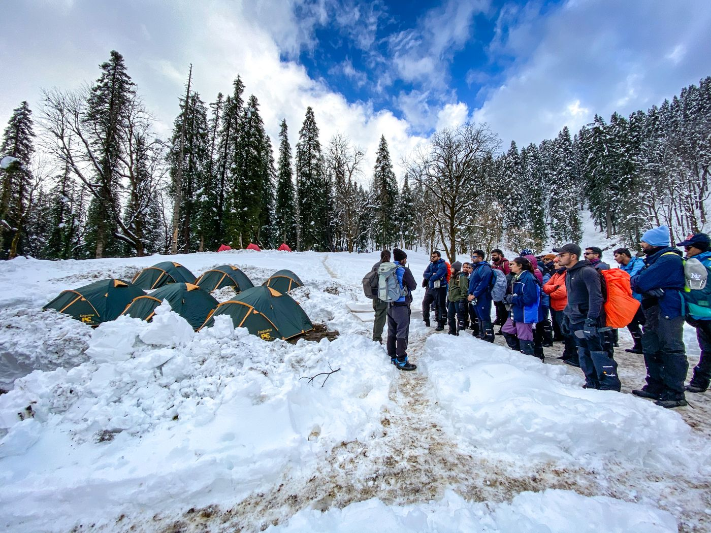

Experience the most glamorous trek of Himalayas!
6Days/5night
13-35 years
12500 ft
Moderate
About
Kedarkantha is one of the most popular winter treks of India. It's an easy to moderate level trek which attracts visitors for its amazing snow-clad landscapes and a tall summit (12,500 ft), which offers majestic panoramic views from its top. Those who love snow & mountains, this trek is undoubtedly the best choice for them.
Kasol
Rs5,499/- 5days

Ahmedabad
Rs9,499/- 9days
Delhi
Rs7,499/- 7days
Kasaol
Rs5,499/- 7days
Arrival at Campsite , Brifing & Acclimatization know more
Night stay at Janoul Campsite know more
Visit Juda ka Taal & Night stay at KBC know more
Summit & Trek to Hargaon/Janoul Camp know more
Trek Back to Sankri & Disperse know more